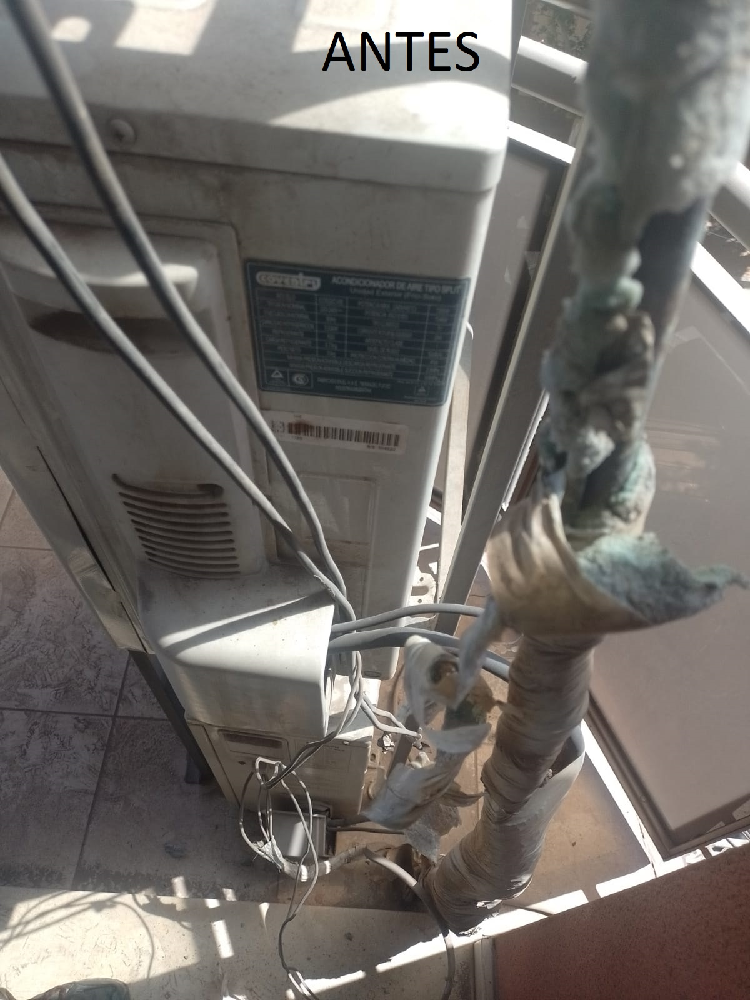
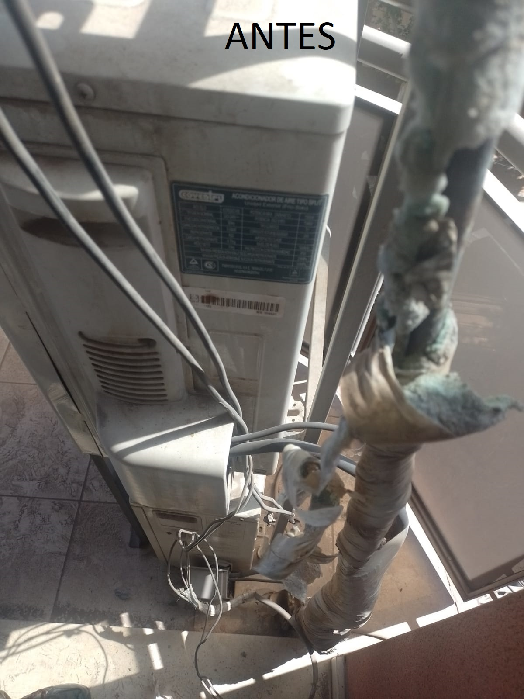

En Polo Sur Refrigeración, nos enorgullece ser su socio confiable en el ámbito de la reparación de equipos de refrigeración y climatización. Con años de experiencia en la industria, hemos establecido una reputación sólida y duradera como expertos en aires acondicionados y heladeras.
Ya sea que necesite reparaciones de emergencia, mantenimiento preventivo o mejoras en la eficiencia energética de sus sistemas de refrigeración, estamos aquí para ayudarlo. Confíe en nuestra eficiencia para mantener sus aires acondicionados y heladeras en óptimas condiciones.
Como marca de garantia contamos con la aprobacion de la camara argentina de calefaccion, aire acondicionado y ventilacion y de Friac la cual garantiza no solo un trabajo bien realizado sino tambien una garantia por cualquier mal funcionamiento del equipo manipulado
Pero dejemos que nuestros trabajos hablen por nosotros
 


No deje que el tiempo pase desapercibido. En Polo Sur Refrigeración, sabemos lo crítico que es mantener sus sistemas de refrigeración en óptimas condiciones. No espere a que una pequeña preocupación se convierta en un problema costoso. La temperatura de su espacio es esencial para su comodidad y bienestar, y el tiempo puede ser su aliado o su peor enemigo.
Cada día que pasa sin un diagnóstico y mantenimiento adecuado puede hacer que sus sistemas de frigorias se vuelvan menos eficientes, lo que podría llevar a un mayor consumo de energía y, en última instancia, a averías costosas. Recuerde que estamos aquí para ayudarlo.